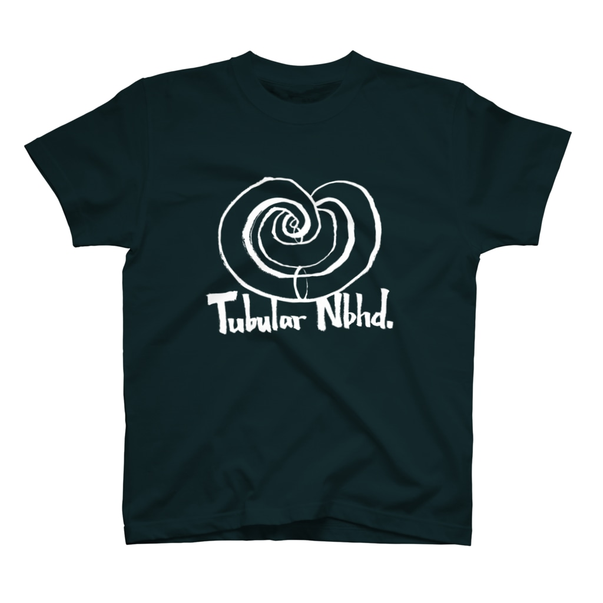

発信・イベント
一般向けの数学講演、科学イベントの企画・運営、動画やグッズの制作の記録。
イベント・科学技術コミュニケーション
- 2026年11月
ワークショップ「数理をつかおう―ものの形と安定性」
理化学研究所一般公開（神戸地区10月31日、和光地区11月3日）で、企画運営・解説役を務めました。
主催：理化学研究所（永井智哉）、島田卓也、篠崎菜穂子
- 2026年1月
発表会「Ezo 探求-festival」
審査員を務めました。主催：北海道教育委員会、国立大学法人北海道大学
- 2025年6月
キャリアカフェ「その一歩先にある無限の出会い／(非)存在を量るトポロジー」
プレゼンターを務めました。主催：北海道大学理学部
- 2025年3月
展示会「科学をあるく ―原子力からみる科学のつながり―」
企画運営・展示スタッフを務めました。
主催：CoSTEP 20期・対話の場の創造実習
協力：北海道大学総務企画部総務課 創基150周年記念事業準備事務室、北海道大学 広報・社会連携本部
- 2025年3月
CoSTEP受講説明会・修了生座談会
登壇しました。
- 2025年3月
CoSTEP 20期本科・対話の場の創造実習を修了しました。
- 2024年10月
サイエンスカフェ「もしもし、未来のわたしへ」
プレコンセプションケアをテーマに、企画運営・司会を務めました。
主催：CoSTEP 20期・対話の場の創造実習
「第83回日本公衆衛生学会総会」の市民参加型特別企画として開催しました。
- 2024年9月
CoSTEPの講義レポートを執筆しました。
- 2024年5月
CoSTEP 20期本科・対話の場の創造実習が始まりました。
数学の講演
- 2026年2月12日
ツバメの尾とゆうれいひげ
日曜数学会ミニin北海道
- 2022年6月19日
3次方程式の係数空間 Revisited!
第24回日曜数学会
- 2021年10月23日
数学で工作しよう！
第22回日曜数学会
- 2021年6月13日
複素関数を視てみよう
第21回日曜数学会
- 2021年1月24日
3次方程式の係数空間を分割してみよう！
第20回日曜数学会
- 2020年10月31日
特異点はいつもあなたのそばに ～特異点を食べる～
第19回日曜数学会
- 2020年1月26日
目に入れても痛くない特異点
第4回日曜数学会in札幌
- 2019年8月17日
日常に潜む特異点たち
日曜数学会ミニin札幌
- 2018年10月19日
重解を持つ方程式の係数
第16回日曜数学会inマスパーティ
動画・出演
自身のYouTubeチャンネルでの動画投稿・配信は、現在お休みしています。
- 数理物理チャンネル
幾何学の講師・チューター（2023年10月〜現在）
- クラフトスコーレ「AtoB」
幾何学の講師（2023年4月〜2023年5月）
- おもしろ!北大Lab.
グッズ
SUZURIで、オリジナルデザインのTシャツなどを販売しています。
